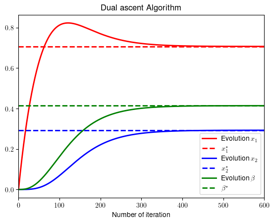

Example_7_2#
Basic example of gradient ascent algorithm
import numpy as np
import matplotlib.pyplot as plt
#!sudo apt install cm-super dvipng texlive-latex-extra texlive-latex-recommended
Solve the optimization problem: $\( \begin{array}{c} \underset{x_{1},x_{2}}{\min}\left(x_{1}^{2}+x_{2}^{2}-2x_{1}\right)\\ \textrm{s.t.:}x_{1}^{2}+x_{2}^{2}-2x_{2}\leq0 \end{array} \)$
Using gradient ascent
# Example 8.2. We write the optimal solutions
b_opt=np.sqrt(2)-1
x1_opt=1/(1+b_opt)
x2_opt=b_opt/(1+b_opt)
# We start from an arbitrary point
Niter=600
x1=np.zeros(Niter)
x2=np.zeros(Niter)
b=np.zeros(Niter)
# Step-sizes
mu=.01
gam=.005
# We implement the set of equations
for k in range(1,Niter):
x1[k]=x1[k-1]-mu*(2*x1[k-1]-2+2*b[k-1]*x1[k-1])
x2[k]=x2[k-1]-mu*(2*x2[k-1]+2*b[k-1]*(x2[k-1]-1))
b[k]=b[k-1]+gam*np.maximum((x1[k-1]**2+x2[k-1]**2-2*x2[k-1]),0)
plt.rcParams.update({
"text.usetex": True,
"font.family": "Helvetica"
})
# Plot the results
x = range(0,Niter)
plt.plot(x,x1,color = 'r',linewidth = 2, label = 'Evolution $x_1$')
plt.plot(x,np.ones(Niter)*x1_opt,color='r',linestyle='dashed',linewidth = 2, label = '$x_1^*$'),
plt.plot(x,x2,color='b',linewidth = 2, label = 'Evolution $x_2$'),
plt.plot(x,np.ones(Niter)*x2_opt,color='b',linestyle='dashed',linewidth = 2, label = '$x_2^*$'),
plt.plot(x,b,color='g',linewidth = 2, label = 'Evolution $\\beta$'),
plt.plot(x,np.ones(Niter)*b_opt,color='g',linestyle='dashed',linewidth = 2, label = '$\\beta^*$'),
plt.xlabel('Number of iteration')
plt.title('Dual ascent Algorithm')
plt.xlim([0,600])
plt.legend()
plt.savefig('example_admm_2.png', dpi = 300)
plt.show()
